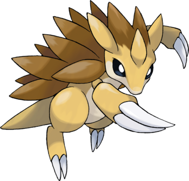

Sablaireau est un Pokémon ressemblant à la fois au blaireau (pattes), au tatou et au pangolin, avec un corps jaune et un ventre blanc pâle. Il possède deux yeux noirs, deux grandes oreilles en pointes et une corne jaune sur la tête. Son dos est hérissé de grosses épines marron allant de la tête jusqu'au bas du dos. Contrairement à sa pré-évolution Sabelette, sa queue n'a pas de rayures. Ce bipède est muni de deux grandes griffes aux bras et aux jambes.